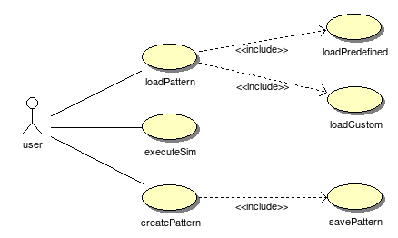
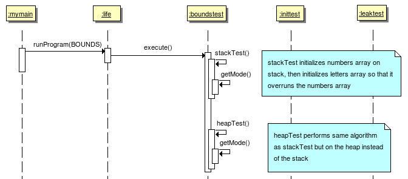
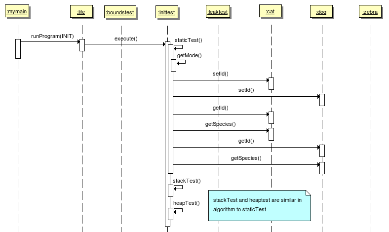
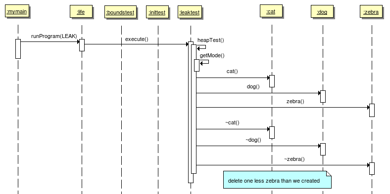
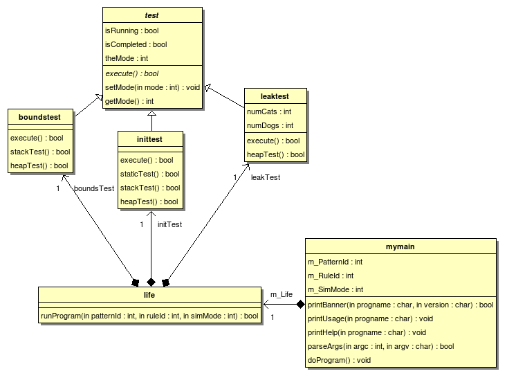
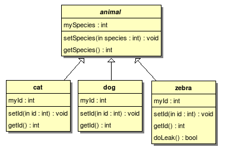

Life is an implementation of Conway's Game of Life.
The DynTest utility provides the user with several options for which kind of memory fault to simulate to aid in evaluating memory analysis tools.

use cases
Class user |
The user runs the "bounds test" option of DynTest.

boundstest
The bounds test simulates the situation of over-running an array into another array thus corrupting the data in the second array.
The user runs the "init test" option of DynTest.

inittest
The init test simulates the situation where data within an object is not initialized prior to trying to reference or read that data.
The user runs the "leak test" option of DynTest.

leaktest
The leak test simulates that situation where the number of deletes do not equal the number of news.

tests
The tests class diagram show the relationships and structure of the test classes used within the DynTest utility.
Class test |
Class boundstest |
Class inittest |
Class leaktest |
Class life |
Class mymain |

animals
The animal classes are essentially data types that the various tests can use as part of their processing to simulate memory faults.
Class animal |
Class cat |
Class dog |
Class zebra |
Artifact animal |
Stereotype: source
Artifact source associated with : animal
Artifact dog |
Stereotype: source
Artifact source associated with : dog
Artifact cat |
Stereotype: source
Artifact source associated with : cat
Artifact zebra |
Stereotype: source
Artifact source associated with : zebra
Artifact test |
Stereotype: source
Artifact source associated with : test
Artifact boundstest |
Stereotype: source
Artifact source associated with : boundstest
Artifact inittest |
Stereotype: source
Artifact source associated with : inittest
Artifact leaktest |
Stereotype: source
Artifact source associated with : leaktest
Artifact life |
Stereotype: source
Artifact source associated with : life
Artifact mymain |
Stereotype: source
Artifact source associated with : mymain
Artifact main |
Stereotype: source
Artifact source